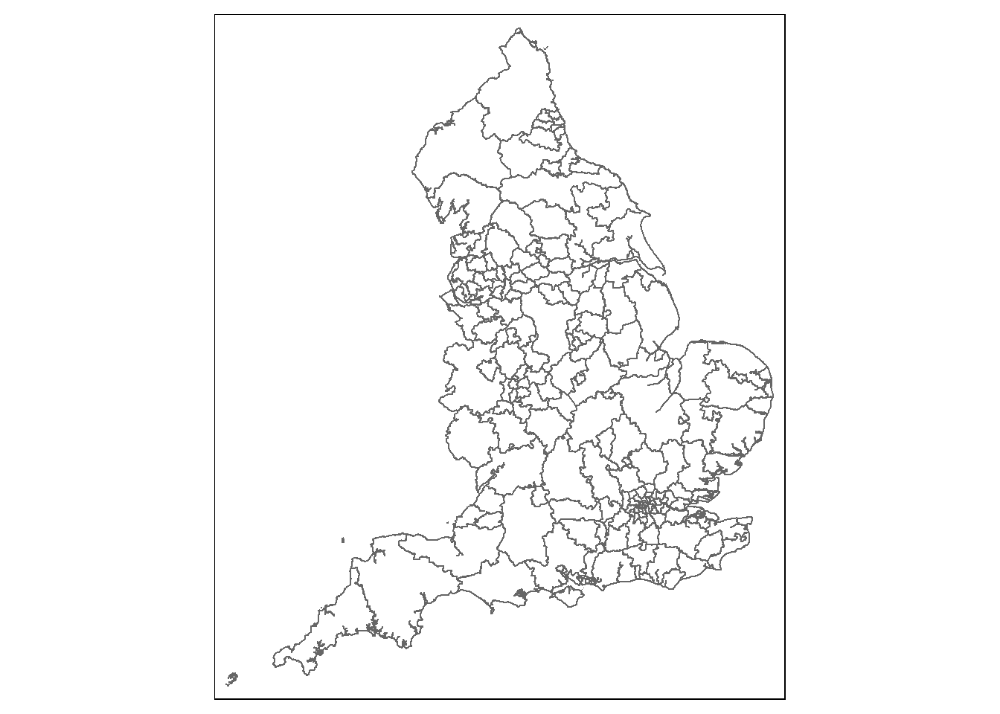
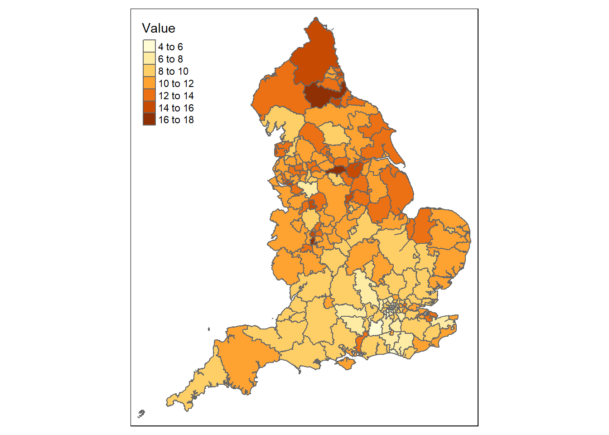
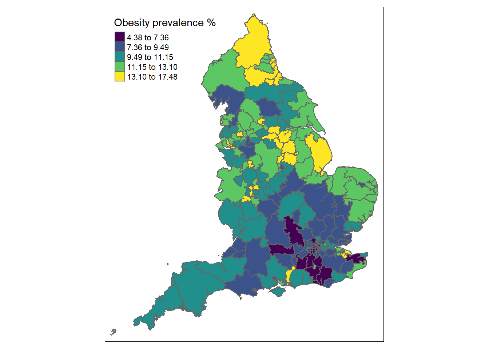
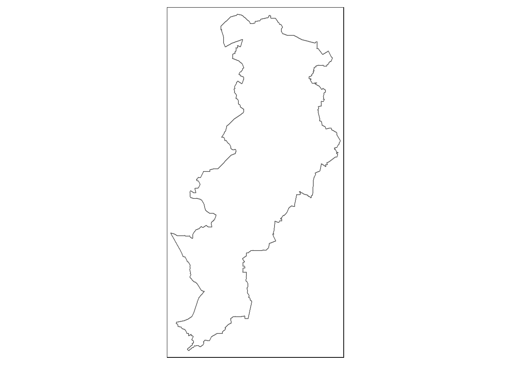
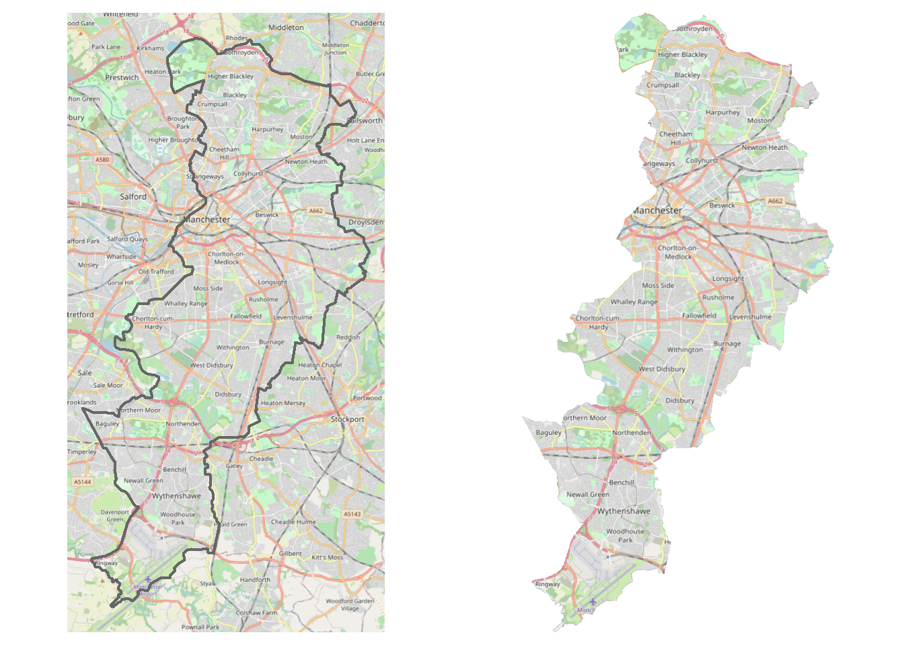

Lets make a map in R
Contents
There’s a lot of really great posts on mapping in R. This one from the Trafford Data Lab is the one I used when I was starting out in R, and is the post I recommend to anyone interested in making maps with R.
Most posts use ggplot2 to make maps. Here, we’re going to use the tmap package. tmap makes thematic maps - which is a fancy way of saying ‘plotting data on a map’. I prefer tmap to ggplot2 because tmap was built specifically for making maps. ggplot2 is a general plotting library - while it can make maps, it’s usually faster & easier to make them in tmap.
This post is a quick overview of using tmap (plus a couple of other libraries). We’re going to:
- Make a choropleth map
- Add in a basemap using OpenStreetMap
If you want more info, have a look at the tmap vignette.
First thing’s first, we’re going to load the packages needed for mapping:
library(dplyr) # For working with data
library(sf) # For working with shapefiles
library(tmap) # For making maps
library(cartography) # For downloading basemaps
library(raster) # For plotting basemaps
library(fingertipsR) # For health dataLets make a choropleth
We’re going to make a choropleth of obesity prevalence across England. A choropleth is just a colourful map - the map is divided up into different areas, then those areas are coloured in based on some variable. Before we can make a choropleth we’re going to need two things: a map, and some data. These are both dead easy to get.
We’ll start with the map. We need to get a shapefile (a file which tells the computer how to draw the map). In the UK the best place to go is the ONS Geoportal, which contains all the shapefiles used by the ONS. We’re going to grab the ultra-generalised CCG boundaries. A CCG is a clinical commissioning group, they’re responsible for health related things so any health data (like obesity prevalence) is usually displayed at CCG level. Ultra-generalised shapefiles are slightly less detailed than other shapefiles. This is fine for plots, and they’re usually smaller files so are quite fast to work with.
Head over to the link and click on the ‘APIs’ button. Highlight the ‘GeoJSON’ one and read it in:
shp_ccg = read_sf('https://bit.ly/3pHX0t1')And use tmap to have a look at it. tmap is based on the layered grammar of graphics, same as ggplot2. This means the tmap syntax is very similar to ggplot2:
tmap_mode('plot') # Tell tmap to do a plot
tm_shape(shp_ccg) + # Using this shape...
tm_borders() # ... plot the borders
We can get the data using the excellent fingertipsR package from Public Health England:
df_prev = fingertips_data(IndicatorID = 92588,
AreaTypeID = 165)This returns the yearly obesity prevalence figures for each CCG. The prevalence is in the Value column. Lets grab the latest numbers:
df_prev = df_prev %>%
filter(Timeperiod == '2018/19')Now all we need to do is join the data together and we’re ready to plot. Looking at the names of shp_ccg and df_prev, we can join on the CCG code - called CCG19CD in shp_ccg and AreaCode in df_prev:
shp_ccg = shp_ccg %>%
left_join(df_prev, by = c('CCG19CD' = 'AreaCode'))Plotting this is easy enough - we just need to tell tmap to plot polygons (rather than borders like we did above) & tell it how to colour those polygons in:
tmap_mode('plot')
tm_shape(shp_ccg) +
tm_polygons(col = 'Value')
And we’re done! As you can see, tmap figures out some reasonable guesses at how many categories to use. You can change this using the n = argument if you want to use a specific number of categories. You can also change how the categories are chosen by changing the style = argument. A good default is to use style = 'jenks', which tends to make a smallish number of classes & handles outliers well:
tmap_mode('plot')
tm_shape(shp_ccg) +
tm_polygons(col = 'Value',
style = 'jenks',
title = 'Obesity prevalence %',
palette = 'viridis')
We’ve customised the plot using the title and palette arguments. There’s loads of other arguments you can mess about with if you want to customise the map further. Type in ?tm_polygons to read more about them.
Lets add a basemap
Everything we’ve seen so far can be done in ggplot (go read the Trafford Data Labs blog to see how!). But there’s one area where tmap is much better than ggplot2 - working with raster data.
If you’ve never heard the term before, just think of a raster as image data. They’re usually used to show roads & buildings on maps. tmap supports raster data out of the box, at the time of writing ggplot2 doesn’t & you need to do some dodgy work arounds to get raster data working. Plotting rasters in tmap is done using the tm_rgb function.
Here’s a close up of Manchester CCG:
shp_manc = shp_ccg %>%
filter(CCG19NM == 'NHS Manchester CCG')
tmap_mode('plot')
tm_shape(shp_manc) +
tm_borders()
Unless you spend a lot of time looking at maps of Manchester, this probably isn’t particularly useful. The easiest way to make this more useful would be to add in some of the major roads & landmarks, so the map shows more info about Manchester. Geographic information for more or less anywhere is collected through OpenStreetMap. OpenStreetMap is a crowdsourced map of the world, anyone can make an account and add information about a road, building, park, or any other point of interest.
We can get rasters of OpenStreetMap using the cartography package. The function getTiles takes a shapefile & returns a raster of all OpenstreetMap data for that shapefile:
osm_raster = getTiles(shp_manc, type = 'osm',
zoom = 12, crop = T) This next bit of code snips the raster to just the bit inside the shapefile. mask returns another raster, but any parts of the original raster which are outside of the shapefile are set to NA. We then crop the shapefile down to match the shapefile:
msk = mask(osm_raster, shp_manc)
base_map = crop(msk, shp_manc)Let’s have a look. The left plot shows the full raster returned by the getTiles function, and the right plot shows the raster cropped to just Manchester CCG:
full_map = tm_shape(osm_raster) +
tm_rgb() +
tm_shape(shp_manc) +
tm_borders(lwd = 2) +
tm_layout(frame = F)
cropped_map = tm_shape(base_map) +
tm_rgb() +
tm_layout(frame = F)
tmap_arrange(full_map, cropped_map)
Slightly more code than before, but there’s nothing new here. Plotting rasters works the same way as plotting shapefiles - first say you want to draw a shape tm_shape(), then say how you want to display the shape tm_rgb(). The tmap_arrange function lets you arrange multiple maps into a single plot.
Wrap up
This was a very quick overview of using tmap. If you want to learn more, here’s a few resources I’ve found useful:
- The
tmapvignette - Geocomputation with R by Lovelace, Nowosad, and Muenchow. This is a full on book about geocomputation in R. Chapter 8 goes into tmap in loads of detail